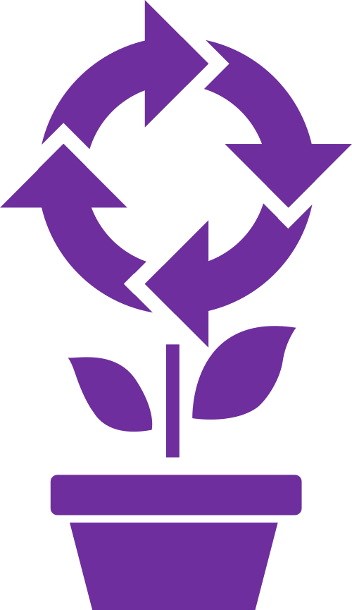

workflowr
is an R package for managing data analysis projects:
Organized:
Keep your files organized from the very beginning of your project
Reproducible:
Automatically version your code and results, re-run outdated analyses, record your computational environment, and more!
Shareable:
Save your results in a website and share them online
Discover
Search the catalog of workflowr projects to find open, reproducible science in your field.
Search all projects
Search by tags
Create
Use workflowr to manage and share your data analysis projects.
Start a new project
Register an existing project
Contribute
Contribute to open science by supporting the workflowr community.
Write a How-to guide
Report or fix software bugs